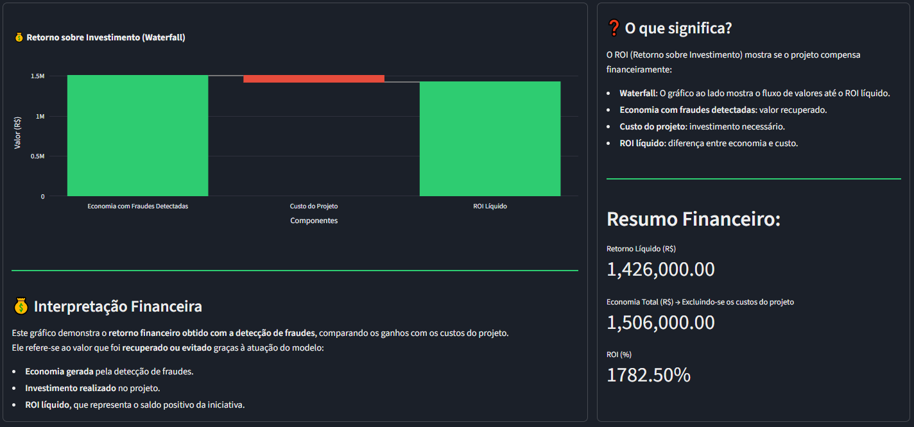
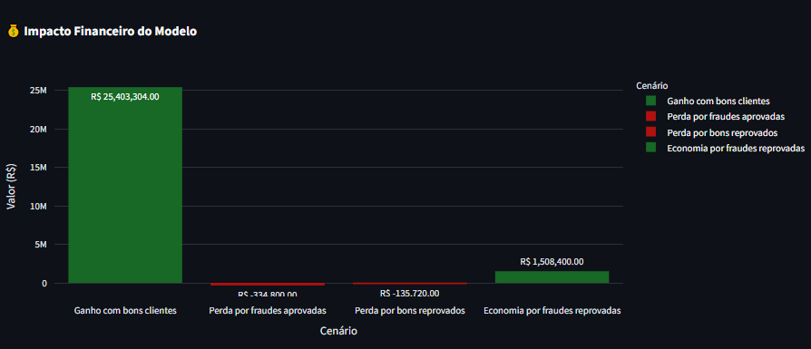
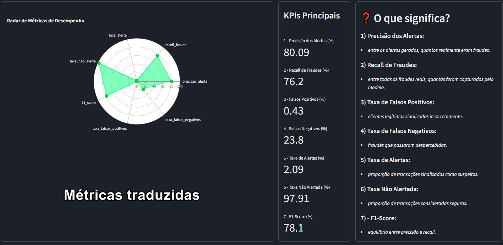
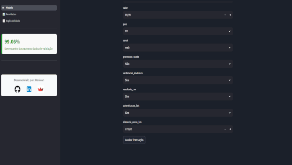
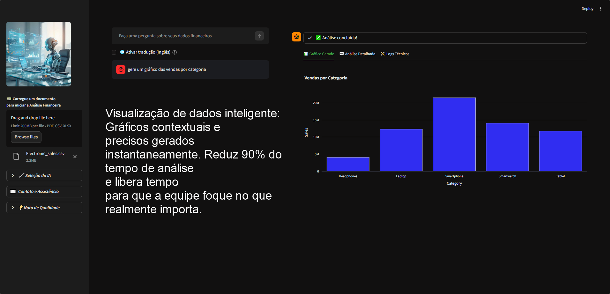
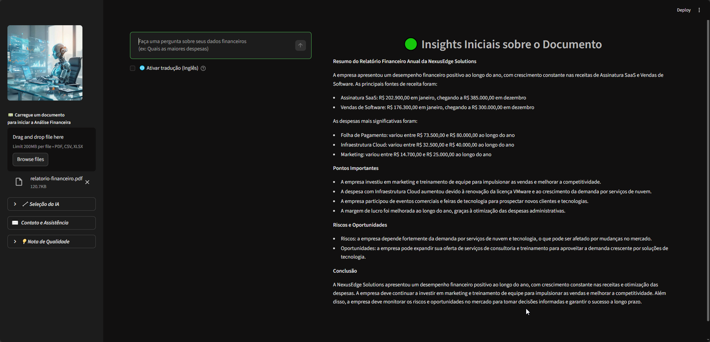
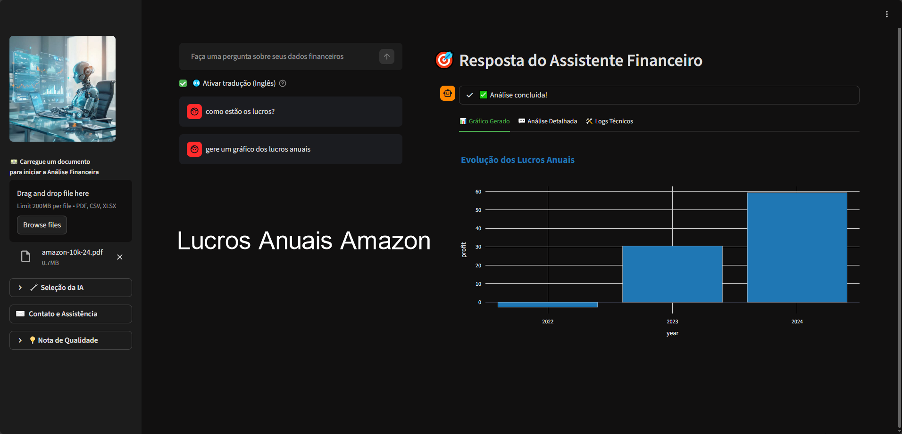

Ciência de Dados e Machine Learning
Projeto focado na detecção de fraudes em transações financeiras utilizando técnicas de Machine Learning e análise de dados em tempo real.




Ferramenta de gestão financeira pessoal que utiliza inteligência artificial para fornecer insights, recomendações e automação de tarefas financeiras.


